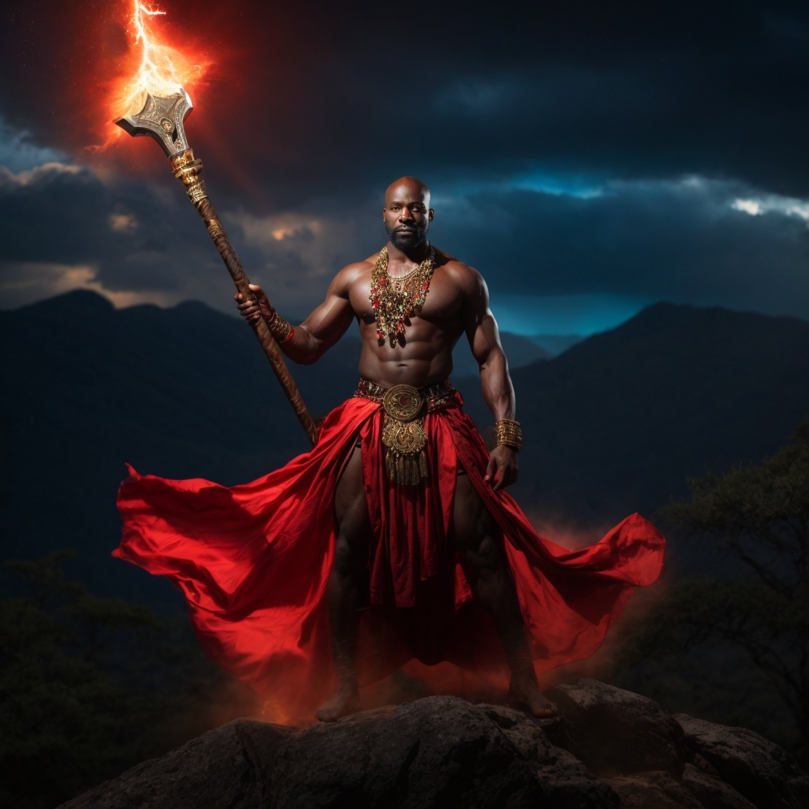

Xangô é um orixá bastante cultuado pelas religiões afro-brasileiras, considerado deus da justiça, dos raios, dos trovões e do fogo, além de ser conhecido como protetor dos intelectuais.
Costuma se dizer que São Jerônimo, que no sincretismo religioso corresponde ao orixá Xangô, castiga os mentirosos, os ladrões e malfeitores. Seu símbolo principal é o machado de dois gumes e a balança, símbolo da justiça.